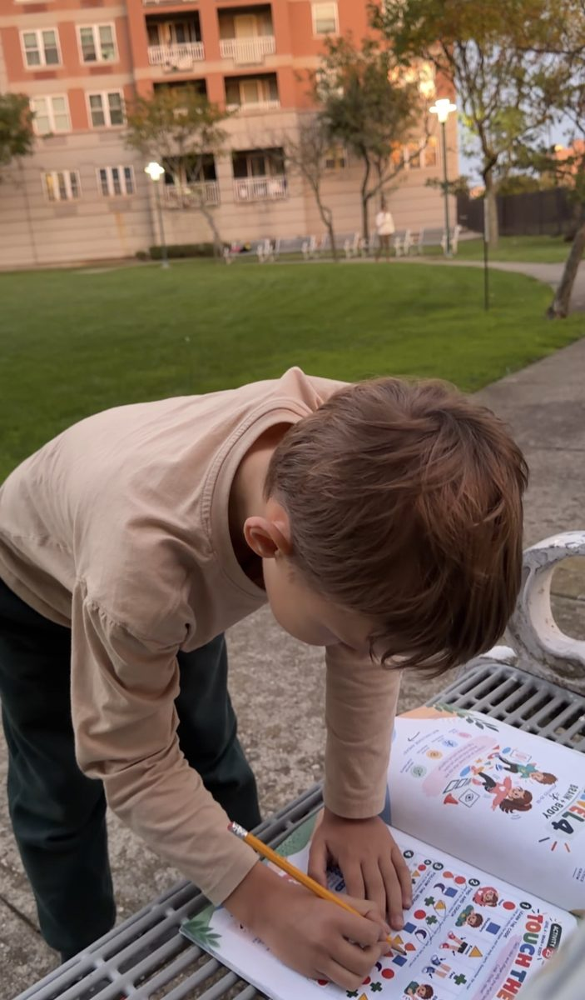
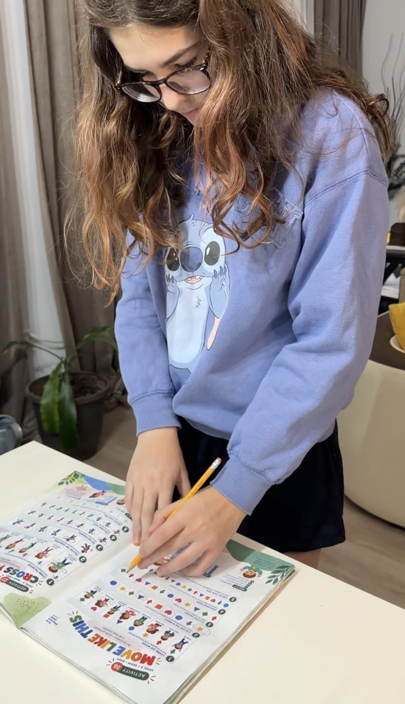

A brain + body workbook / Ages 6–10 / By Natalia Milos
Ten minutes. One puzzle. One move.
A screen-free workbook where kids spot what changed, find the path and finish the pattern, then cross a hand to the opposite knee or balance on one foot. Most challenges pair thinking and moving on the same page.

Made for her own kids. They were the first testers.
Real pages, real kitchen tables, a bench in the park. No staging.




Look. Think. Move.
Eight levels, from Look + Focus and Left + Right to Logic + Hands and Super Brain. Every activity has two parts: Just Play for ages 6–7 and Level Up! for ages 8–10, so siblings can share one book.


The gentle version: a simpler task to start with, so the first wins come fast.

Same activity, a harder task: more to keep in mind, more to plan, trickier moves.


Natalia Milos
“I made this book for my own children. They were its first testers.”
Director of Coddy, a coding school for kids in New York. For more than 10 years she has worked with children and kept seeing the same thing: kids engage differently when they can think and move at the same time. Neuro Games collects the activities she practiced at home with her own kids.
Her toughest examiner was the family's grandmother, a doctor with 40 years of practice who spent years caring for children at the Suvorov Military School and a children's wushu federation. She quizzed Natalia on anatomy and physiology before her exams, with checks that would make Minos and Procrustes look lenient. The illustrations were drawn by AI from Natalia's detailed instructions, which kept the book affordable. The concept, every activity, both age versions and all the checking are her work.


Certificates are issued to her full name, Natalia Miloserdnaya. Tap one to see it full size.
Why moving and thinking belong together.
Researchers have studied how physical activity relates to children's attention and thinking for years. Here is what some of the key studies found, in plain words.
5 more studies
Neuro Games is built on these ideas. The book itself has not been tested in a scientific study, and it is an activity book, not a treatment.
Ready for ten minutes of brain + body play?
Neuro Games: Brain + Body Workbook. Paperback, 82 pages, ages 6–10.
Buy on Amazon